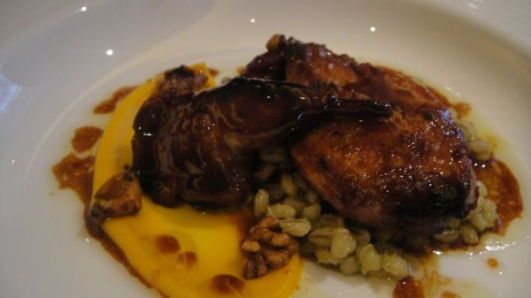

Cranberry Roast Pork

Photo: Silverman68 (CC BY 2.0)
A slow-cooker pork loin roast braised in a sweet cranberry sauce, finished with a cornstarch-thickened cranberry gravy for serving over the sliced pork.
Directions
- Place pork roast in a slow cooker. In a medium bowl, mash cranberry sauce; stir in sugar, cranberry juice, mustard and cloves. Pour over roast. Cover and cook on low for 6-8 hours or until meat is tender. Remove roast and keep warm. Skim fat from juices; measure 2 cups, adding water if necessary, and pour into a saucepan. Bring to boil over medium -high heat. Combine cornstarch and cold water to make a paste; stir into gravy. Cook and stir until thickened. Season with salt. Served with sliced pork.
- Place the pork roast in a slow cooker.
- In a medium bowl, mash the jellied cranberry sauce; stir in the sugar, cranberry juice, dry mustard, and ground cloves. Pour the mixture over the roast.
- Cover and cook on low for 6 to 8 hours, or until the meat is tender.
- Remove the roast and keep it warm.
- Skim the fat from the cooking juices. Measure out 2 cups of juices, adding water if necessary, and pour into a saucepan.
- Bring to a boil over medium-high heat.
- Combine the cornstarch and cold water to make a paste; stir it into the gravy.
- Cook and stir until thickened. Season with salt to taste.
- Serve the gravy with the sliced pork.
Goes well with
https://lizotte.cool/recipe/cranberry-roast-pork.html